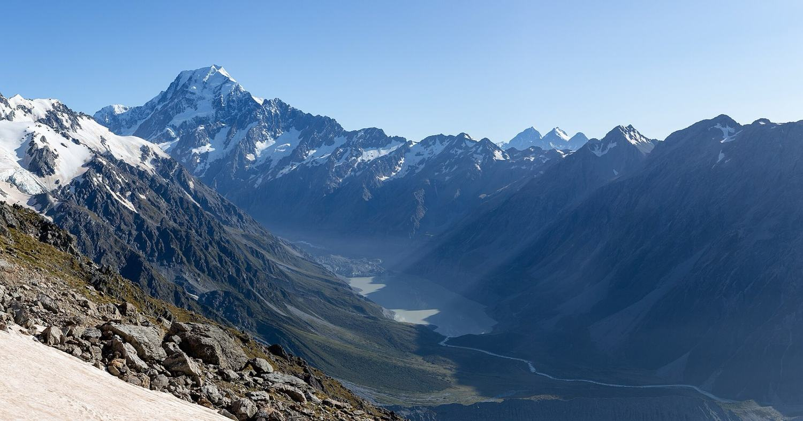

4 個人都要跳。問題不是「跳不跳」，是在哪裡跳、哪一天跳、跳不成怎麼辦。
紅色 pin。Skydive Mt Cook 在 Lake Pukaki 機場，正好卡在 9/27 Tekapo→Mt Cook 的岔路口，完全不繞路；另外兩個在皇后鎮與 Wanaka，是備案。
皇后鎮是紐西蘭跳傘的發源地、名氣最大。但以你們這條路線來說， 最好的選擇在更前面——Lake Pukaki 機場。理由有三個，每個都很硬。
Skydive Mt Cook 的跳傘場在 Lake Pukaki Airport（2 Swallow Drive, SH8）， 正好卡在 Tekapo → 普卡基湖 → Mt Cook 這段的岔路口。不用繞路，順路停一站。
NZONE 皇后鎮最高 15,000 ft／60 秒／NZ$549。 Skydive Mt Cook 同樣 NZ$549，但是 16,500 ft／70 秒—— 該區域最高，多 10 秒自由落體。
視野是 Aoraki／Mt Cook 國家公園、塔斯曼冰川、 Ohau／Pukaki／Tekapo 三座冰河湖。皇后鎮跳的是湖與小鎮；這裡跳的是3,724 公尺的南阿爾卑斯主稜。
9/27 早上第一場，在 Lake Pukaki 機場跳 16,500 ft。 跳不成就往後推——9/29 離開 Mt Cook 往 Wanaka 時會再經過同一個機場， 最後還有皇后鎮 10/01、10/02 兩天當終極保險。總共四個機會。
南島能跳傘的地方不少，但對你們有意義的只有三個。 其他的不是不在路線上，就是要多開好幾個小時。先把地圖攤開。
| 跳傘場 | 位置 | 對應你們行程 | 判定 |
|---|---|---|---|
| Skydive Mt Cook | Lake Pukaki 機場（SH8） | 9/27 途經、9/29 回程再經過 | 首選 完全順路 |
| NZONE Skydive | 皇后鎮 | 10/01、10/02 兩個機動日 | 備案 停留 2 天，很穩 |
| Skydive Wānaka | Wanaka 機場 皇后鎮有接駁 |
9/29–9/30 在 Wanaka；或皇后鎮接駁 | 備案 接駁反而更便宜 |
| Skydive Southern Alps | Glenorchy（皇后鎮北 45 分） | 10/01、10/02 | 不建議 官網已停擺，見下 |
| Skydive Franz Josef & Fox | 西海岸 Franz Josef | — | 出局 路線完全沒經過 |
| Skydive Abel Tasman | Motueka（南島最北） | — | 出局 距離 700 km 以上 |
網路上（TripAdvisor／Bookme／Klook）還在賣它的行程，價格也確實比較便宜（12,000 ft 約 NZ$359，比 NZONE 的 $449 低）。
但我直接連它的官方網域 skydivesouthernalps.co.nz，回來的是一個
完全沒有內容的 SilverStripe 預設安裝頁——連首頁都還寫著「Welcome to SilverStripe!」。
它的集合點寫「35 Shotover St, Queenstown」，跟 NZONE 的門市是同一個地址。 意思是它可能已經被整併、或改由他人代銷。不是說不能跳，而是出了事你找不到一個能負責的官方窗口。 4 個人的錢和安全，不值得省這幾百塊去賭。
南島的跳傘其實掌握在兩個集團手上：
· INFLITE Group：Skydive Mt Cook、Skydive Franz Josef、Skydive Abel Tasman，
還有 Mount Cook Ski Planes & Helicopters（就是第三份文件裡的冰川直升機）。
· Experience Co：NZONE Skydive（頁尾寫 Skydive Holdings Pty Ltd, An Experience Co Adventure）。
這件事有實際好處：你們的跳傘和冰川健行如果都選 Mt Cook，是同一個集團、同一個機場區域、同一批天氣判讀團隊。 溝通改期時會單純很多。
價格全部是 NZD 含 GST，查證於 2026/08/20，以各官網最新公告為準。
INFLITE Group 旗下。跳傘場設在 Lake Pukaki 機場， 正對 Aoraki／Mt Cook。官方自稱該區域最高跳點。
天候取消：起跳前 1 小時通知， 可選擇改期或 100% 全額退款。
紐西蘭第一家跳傘公司，累積超過 35 萬跳。 Experience Co 旗下，機隊載客量全紐最大——這代表 4 個人比較容易排進同一架。
天候取消：會盡力改到其他日期 或其他跳傘場；真的排不出來可要求全額退款。
獨立經營，跳點在 Wanaka 機場。 網路上盛傳它已停業，這是錯的——2026/08/20 查證，官網、促銷與線上訂位系統全部正常運作， 而且直接查到 2026/09/29 與 10/02 都還有真實庫存（正好是你們的備案日）。
WANULT20 折 $20）天候取消：協助改期或改地點，無法改期則全額退款。
看起來很怪，但這在紐西蘭的冒險活動很常見：接駁方案是綁定通路的促銷價， 目的是把皇后鎮的客流吸到 Wanaka。你等於用比較低的價格，還省下自己開 1.5 小時山路。 唯一代價是要綁 5 小時。如果 10/01 或 10/02 決定在皇后鎮補跳，這是最划算的選項。
跳傘的錢幾乎都花在「飛機爬多高」上。 高度決定自由落體秒數，而自由落體才是你會記一輩子的那段。 開傘之後的傘降 3–5 分鐘，各高度都差不多。
有。25 秒的跳法是「還沒反應過來就開傘了」； 60–70 秒才夠讓你從驚嚇切換到享受。多數人回報：前 15 秒腦袋空白， 之後才真正開始看風景。25 秒基本上都花在空白上。
同樣 $549，NZONE 給你 15,000 ft／60 秒，Mt Cook 給 16,500 ft／70 秒。 再往上（18,000 ft 以上）就要吸氧氣、價格跳一級，紐西蘭只有 Abel Tasman 和 Franz Josef 有， 兩個你們都不會經過。
只有 10,000 ft／30 秒，但從直升機艙門跳（不是飛機）， 而且已含攝影套餐（單買就 $209–379）。扣掉攝影，本體約 $420–590。 想要獨特畫面的人值得，想要長自由落體的人不划算。
| 方案 | 單人 | 4 人合計 | 換算台幣（約） | 備註 |
|---|---|---|---|---|
| Mt Cook 16,500 ft | NZ$549 | NZ$2,196 | 約 NT$43,900 | 建議方案，最高、最長 |
| Mt Cook 13,000 ft | NZ$399 | NZ$1,596 | 約 NT$31,900 | 省 NZ$600，少 25 秒 |
| Mt Cook 10,000 ft | NZ$299 | NZ$1,196 | 約 NT$23,900 | 最便宜，但只有 30 秒 |
| Mt Cook 直升機跳傘 | NZ$799 | NZ$3,196 | 約 NT$63,900 | 含攝影，只有 30 秒 |
| NZONE 15,000 ft | NZ$549 | NZ$2,196 | 約 NT$43,900 | 同價少 1,500 ft |
| Wanaka 15,000 ft ＋皇后鎮接駁 | NZ$499 | NZ$1,996 | 約 NT$39,900 | 備案裡最划算 |
強烈建議至少加最便宜的那個。原因很現實： 官方明文禁止在飛機上和跳傘過程中使用任何個人相機、手機、電子設備—— 你不可能自己拍。地面同伴也拍不到自由落體。不買，就完全沒有影像。
| 套餐 | 價格 | 拍到什麼 | 能否預訂 |
|---|---|---|---|
| 手腕 GoPro（Handicam） | NZ$209 | 教練手腕視角，近距離表情，全程含落地。40+ 張照片 | 可預訂 |
| 隨跳攝影師（Freefall） | NZ$319 | 另一位攝影師跟著跳，第三人稱大景視角 | 不能預訂，當天現場看有沒有空 |
| Ultimate Combo（雙機） | NZ$379 | 手腕＋隨跳攝影師兩種視角合剪 | 可預訂（Wanaka 線上輸 WANULT20 折 $20） |
16,500 ft ＋ Ultimate Combo = NZ$549 + $379 = NZ$928／人 → 4 人 NZ$3,712（約 NT$74,200）
想省一點：16,500 ft ＋ 手腕 GoPro = NZ$758／人 → 4 人 NZ$3,032（約 NT$60,600）
※ 台幣為 1 NZD ≈ 20 TWD 的粗估，僅供同行者感受量級，實際以刷卡當日匯率為準。
※ 非紐西蘭 Eftpos 卡在現場或電話刷卡，NZONE 與 Wanaka 都加收 1.2% 手續費，線上先付可避開。
跳傘 100% 看天氣。 你們的行程是固定天數、每天都要移動，一旦某天被取消，沒有備案就等於這輩子不用跳了。 好消息是：三家的天候取消政策都很乾淨——不會賠錢，只會賠掉機會。 所以真正要設計的不是退費，是備案日。
| 項目 | Skydive Mt Cook | NZONE | Skydive Wānaka |
|---|---|---|---|
| 天候取消如何通知 | 起跳前 1 小時 | 未明載 | 未明載 |
| 天候取消後 | 改期或 100% 退款 | 改日期或改地點；不行則全額退款 | 改期或改地點；不行則全額退款 |
| 自己取消（48h 前） | 免費 | 免費（24h 前） | 免費（24h 前） |
| 自己取消（期限內） | 官方條款：48h 內收 100% FAQ 另寫 48–24h 收 50%，兩處不一致 | 24h 內收 100% | 24h 內收 100% |
| 改期次數 | 未明載 | 24h 前可無限次改，效期 12 個月 | 比照 NZONE 條款 |
| 官方自己的建議 | 「訂最早的早上時段。如果你會在該地區待好幾天，把跳傘排在第一天，天氣變化的彈性最大。」—— Skydive New Zealand 官方 FAQ | ||
照著行程排，跳傘一共有四個機會。前兩個在同一個機場，後兩個在皇后鎮。
Tekapo 早上出發 → Lake Pukaki 機場最早場。跳完午餐，下午 Peter's Lookout 進 Mt Cook。
Mt Cook → Wanaka 當天早上會再次經過 Pukaki 機場。同一家、同一個跳傘場，補跳零成本。
皇后鎮機動日。NZONE 就在鎮上，或搭 Skydive Wānaka 的接駁（$499／15,000 ft）。
皇后鎮第二個機動日。這天再不行，就真的要放棄了——10/03 之後路線離開所有跳傘場。
9/29 早上同時是跳傘的備案 1、也是冰川直升機健行的備案日（見第三份文件）。 如果 9/27 跳傘和 9/28 冰川健行都被天氣取消，9/29 只能二選一。
建議的優先順序：讓給冰川健行。 因為跳傘在皇后鎮還有 10/01、10/02 兩天可補；冰川健行過了 Mt Cook 就沒有第二次機會了。
訂 9/27 的時候，用英文寫信或講電話時加這句，能大幅提高補救效率：
"We're a group of 4. We'll also be in the area on 29 Sept, and in Queenstown on 1–2 Oct.
If the weather cancels us on the 27th, please hold those as backup options."
很多人以為跳傘就是「上去、跳、下來」，實際上報到到結束大約 3–3.5 小時， 其中真正在天上的時間不到 30 分鐘。心理準備做好，那天早上就別排別的事。

一般休閒服＋綁緊的運動鞋（不能穿涼鞋、拖鞋、靴子）。 跳傘衣會套在外面。9 月底高空很冷，裡面穿一件保暖層。不要戴會掉的眼鏡、耳環、帽子。 隱形眼鏡沒問題，護目鏡會蓋住。
「飛機起飛後才反悔不跳，跳傘費用不退。」三家都一樣。 如果團隊裡有人可能臨陣退縮，要在報到前就決定，不要上了飛機才說。 報到前退出，只要在取消期限內就不收費。
jump@skydivemtcook.com，
說明四人同組、並把 9/29、10/01、10/02 三個備案日先報備。Tekapo → Lake Pukaki 機場約 45 分鐘車程。若訂 8:00 報到， 7:00 從 Tekapo 出發比較安全（9/27 剛好是夏令時間第一天， 凌晨 2 點跳 3 點，記得手機以外的時鐘要自己調）。
為了不誤導同行者，把「官方沒公告 / 查不到」的部分明列出來。